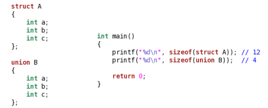

重点说明：
1、if(略)
2、void
①C语言规定只有相同类型的指针才可以相互赋值
②void*指针作为左值用于“接收”任意类型的指针
③void*指针作为右值赋值给其它指针时需要强制类型转换
④void*指针的使用（比如：memset函数的实现）
3、extern
1 extern "C"
2 {
3 int add(int a, int b)
4 {
5 return a + b;
6 }
7 }
//告诉编译器用C方式编译这个函数4、const
①const修饰指针
const int* p; //p可变，p指向的内容不可变
int const* p; //p可变，p指向的内容不可变
int* const p; //p不可变，p指向的内容可变
const int* const p; //p和p指向的内容都不可变
口诀：左数右指
当const出现在*号左边时指针指向的数据为常量
当const出现在*后右边时指针本身为常量
②const修饰函数参数和返回值
const修饰函数参数表示在函数体内不希望改变参数的值
const修饰函数返回值表示返回值不可改变，多用于返回指针的情形
深入了解const的链接：https://blog.csdn.net/hjssss/article/details/86651393
5、struct与union

6、enum枚举类型与#define宏的区别
#define宏常量只是简单的进行值替换，枚举常量是真正意义上的常量
#define宏常量无法被调试，枚举常量可以
#define宏常量无类型信息，枚举常量是一种特定类型的常量